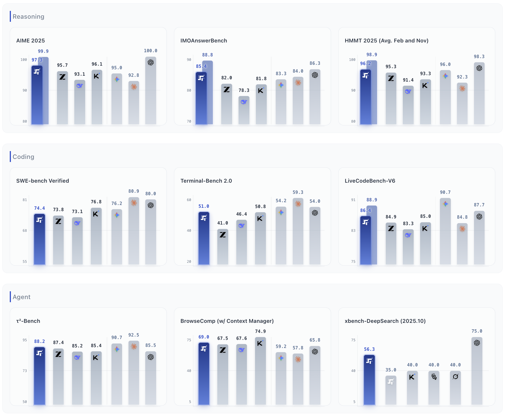
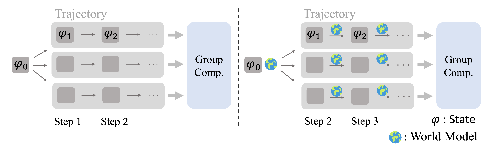
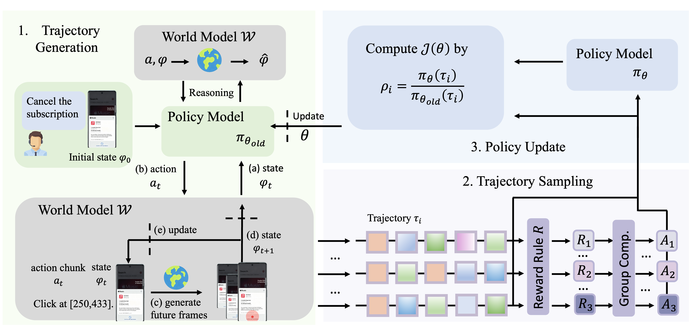
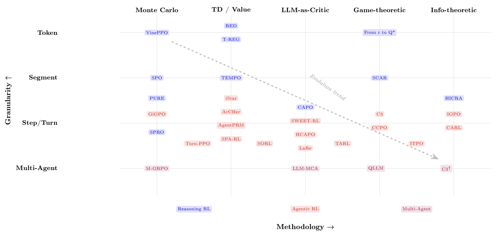

00全景与读法
2026 年秋的前沿有三条主线同时收口：旗舰智能分数收敛（开源权重与闭源旗舰在 Artificial Analysis 指数上只差 2–3 分）、生产级 agent 方案定型（一年的分歧收敛为五个可复述的要件）、提前布局方向分层（六个方向按证据密度可以排出清晰的序）。本文把 D35 的每一节拆开，逐节配"叙事怎么说 / 证据是什么"两栏，再给出本站判断。
每一节固定三段：叙事怎么说（左栏，灰）/ 证据是什么（右栏，橙）/ 本站判断（下方色块）。数字按来源分三类标注：第三方 独立测量或报道、自报 厂商或作者口径、推断 本站分析。凡传闻类条目（GPT-5.7、DeepSeek V4.2、K3.1、MiniMax M3 Pro）均无公开证据，本文不采信。
一条贯穿全文的线索：评估器正在成为方案本身的一部分。生产 agent 把独立评估 agent 写进配方，rubric 奖励把评审写进训练管线，自动化研究的成败取决于验证器是否冻结——D30 的"harness 即分数"在三个层面同时兑现。
01旗舰格局：分数收敛到 2–3 分
Artificial Analysis 智能指数（第三方独立评分）当前梯队：Claude Opus 5 Max 63 > Claude Fable 5 62 > GPT-5.6 Sol / Grok 4.6 各 61 > GLM-5.3 / Kimi K3 各 60 > Gemini 3.7 Flash 56。一年前开源权重与闭源旗舰的指数差普遍在 10 分以上，现在是 2–3 分。
叙事怎么说
"开源已经追平闭源"——以自报基准的单点超越为据（例如 GLM-5.3 自报 Terminal-Bench 3.0 由 4.6 跃至 28.3、CyberGym 84.5 超 Claude Mythos 5）。
证据是什么
第三方 AA 指数是目前唯一跨厂商可比的独立口径：GLM-5.3 与 K3 并列开源第一（60），距榜首 3 分。自报 所有单项超越数字均为厂商自跑，无统一 harness 复现；D30 记录同一模型跨 harness 分差可达 9.5–36 分。
本站判断收敛是真实的，但"追平"要按口径说：在独立指数上差 2–3 分，在自报单项上互有胜负。GLM-5.3 的案例还说明收敛的来源已从基座规模转向后训练——基座与 5.2 一字不动，AA 指数由 53 升至 60（D34）。这直接支持 D25 的判断：能力竞争的增量在后训练配方与基建。
02开源架构共识：总参做大、激活做小
Qwen3.8-Flash-Next（08-26）125B 总参、每 token 仅激活 6B（另有 51B n-gram 嵌入），官方定位 Qwen4 架构预览，自报训练成本约前代 1/9。此前 Step 3.5 Flash（196B/11B，3:1 滑窗:全注意力交错 + MTP-3 多 token 预测）、DeepSeek V4-Flash（284B/13B）已验证同一配方；而总参上探 2–3T（K3 2.8T、Qwen3.8-Max 2.4T）与激活压到 6–13B 同时发生。

这张图怎么读
要读的不是 Step 3.5 Flash 领先多少，而是一个 11B 激活的模型在哪些面板上与数倍激活的旗舰同处一个刻度。Reasoning 行三个面板（AIME 2025 97.3、IMOAnswerBench 85.4、HMMT 96.2）与闭源旗舰差距在个位数；Agent 行的 τ²-Bench 88.2、BrowseComp 69.0 同样在同一刻度。
差距集中在 Coding 行：SWE-bench Verified 74.4 对闭源最高 80.9，Terminal-Bench 2.0 51.0 对 59.3——长程编码 agent 任务对激活参数最敏感，这与 D34 记录的"后训练 scaling 主要拉升 Terminal-Bench 类任务"互为印证。阴影柱是 Parallel Thinking 增强版，读数时注意口径切换；所有数字为厂商自跑。
叙事怎么说
"小激活 MoE 让开源模型以更低成本追平旗舰"——以训练成本 1/9、推理成本数倍下降为卖点。
证据是什么
自报 Flash-Next LiveCodeBench v6 91.9、GPQA-Diamond 91.7、SWE-bench Pro 62.5；Step 3.5 Flash 九项基准见图 1。第三方 无独立指数收录 Flash-Next；小激活模型在 AA 指数上的位置待观察。
本站判断"总参做大、激活做小"是 agent 高频调用经济学的直接产物，与 D26 推理效率主线同源。对 RL-on-NPU 的含义是结构性的：6–13B 激活的旗舰使单机 rollout 可行域大幅扩展，昇腾适配优先级应向该形态倾斜，与 D27 低比特路线叠加是推理成本的乘法。
03网络安全能力决定发布节奏
OpenAI 下一代旗舰 Astra（未发布）被官方声明"无法排除已达 Preparedness Framework 的 Critical cyber 阈值"——首例——并为此暂停 RL 训练两周；Anthropic 以 Mythos 层级 + Glasswing 联盟对高危能力做门控；Z.ai 因 cyber 能力超预期把 GLM-5.3 权重延后两周（D34）。
叙事怎么说
cyber 评估是发布前的合规脚注，不影响能力竞争的节奏。
证据是什么
第三方 三家实验室在两个月内因同一原因延期或门控：Astra 暂停训练两周、GLM-5.3 权重延后两周、Mythos 仅向联盟开放。自报 GLM-5.3 CyberGym 84.5、漏洞账本 2,436 条（仅约 2% 公开）。
本站判断cyber 评估已从合规脚注变成发布关键路径。D34 提出的"能力即风险"在三家实验室同时印证：一个自报数字既是能力证明也是风险声明，第三方复现的缺位使其无法定级。
04开放光谱碎片化与 Meta 回归
MIT（DeepSeek）与 Apache 2.0（Meta Muse Glimmer，30B 稠密多模态端侧模型）之外，收入/MAU 门槛型自定义许可扩散（Kimi K3 License、Qwen Community、MiniMax Community）。Meta 在 Llama 线搁置、闭源 Muse Spark 之后以 Glimmer 重返开源。
叙事怎么说
"open-weight 即 open-source"，许可差异是法务细节。
证据是什么
第三方 Qwen3.8-Max 开源版为纯文本、thinking 强制、专有许可含商用分成条款，完全体为 API 专属；K3 License 非 OSI 认证。自报 Glimmer 4-bit 约 18–20GB 显存，llama.cpp/Ollama/MLX/vLLM 首日支持。
本站判断Meta 的姿态标注了新位置：旗舰闭源 + 端侧开源的分层开放，与 D31 记录的 OLMo 全开放构成光谱两端。评测对照时需注意"开源版与托管完全体非同一模型"的口径问题。
05生产级 agent 配方：五个要件
一年的分歧在 2026 年中收敛为一套可复述的配方。标志性事件是共识翻转：2025-06 发表《Don't Build Multi-Agents》的 Cognition，2026 年自己上线了 "Devin 管理 Devin"（协调者派生至多 10 个隔离 VM 子会话）——其理由（上下文隔离）恰是当年反对多 agent 的理由。
叙事怎么说
多 agent 是失败的方向（Cognition 2025）；单 agent + 长上下文足够；沙箱是可选的安全加固。
证据是什么
第三方 Anthropic、OpenAI、Cognition、Microsoft、LangChain 五家的生产架构均收敛到 orchestrator-worker，peer-to-peer 群聊式设计被放弃；OpenAI 把沙箱与 code mode 内置进 Agents SDK。自报 Anthropic Outcomes 评分器在困难任务 +10pp；多 agent 约 15× token 消耗。
本站判断共识翻转但收窄：fan-out 仅用于可并行且可验证的任务。五要件中最重要的新增是验证外置——自评在长会话中退化，评估器成为方案组件，与 D30"harness 即分数"互为镜像。compaction 与 handoff 实践同时出现在推理侧（生产 agent）与训练侧（GLM-5.3 的 SAO with compaction，D34），是同一原则的两面。
06双协议落定与独立记忆层
MCP 2026-07-28 版完成发布以来最大改版：无状态核心（去掉会话握手，服务器可水平扩展）、Tasks 扩展（轮询式长任务）、MCP Apps 嵌入式 UI、OAuth/OIDC 硬化、12 个月弃用政策。A2A 1.0（Linux 基金会）150+ 组织、供应链/金融/保险生产使用，AP2 扩展做 agent 支付。记忆成为带独立基准的组件层。
叙事怎么说
协议之争未定，MCP 与 A2A 互为替代；记忆是向量库检索的别名。
证据是什么
第三方 格局定型为分工：MCP 管工具、A2A 管跨 agent 协作、Agent Skills 管懒加载能力；NSA/CISA 发布 MCP 安全指南。自报 四个 Tier-1 SDK 同步支持新版；Mem0 LongMemEval 93–94、Zep 时序知识图谱 +18.5%。
本站判断无状态化解决了 MCP 服务器规模化的最大工程障碍。对 RL 基建的含义：训练环境若以 MCP 工具封装，环境服务可水平扩展——与第 09 节的环境规模化直接互补；协议标准化也降低国产栈接入国际 agent 生态的成本。
07长程能力刻度：评测套件触顶
METR Time Horizon 1.1（228 任务）测得 2024 年后 50% 成功率时限的倍增周期约 89–105 天（此前口径 7 个月）；早期 Claude Mythos Preview 的时限已达 16 小时以上（95% CI 8.5–55h）。
叙事怎么说
"agent 已能自主工作 16 小时"，以单点数字为能力宣言。
证据是什么
第三方 套件中 16h+ 任务仅 5/228，METR 明确表示 16h 以上测量不可靠；置信区间 8.5–55h 极宽。SWE-bench Verified 已饱和，前沿转向 Long-Horizon-Terminal-Bench（GPT-5.5 约 4.3%）、SWE-EVO 等。
本站判断评测本身成为瓶颈：旗舰能力顶到测量上限，"造更长的尺"比刷分更稀缺——与 D30 时间跨度轴结论一致。方案设计应假设一年内 agent 可靠时限再翻 4–8 倍。
08提前布局的六个方向：按证据密度排名
这是本文核心：各实验室在产品之外提前投入的方向，按 2026 年证据密度（论文、融资、官方时间表）排序。排名依据是证据密度而非重要性——自动化 AI 研发战略权重最高，但证据刚起步，故列末位。
RL 环境规模化商业化阶段
Prime Intellect A 轮 1.3 亿美元、Anthropic 被报道年 10 亿美元级采购意向、约 50 家环境公司、Environments Hub 上线。环境已是采购科目。
自进化 agent原型至产品
两篇大型综述、约 400 篇文献、EvoAgentBench 基准、Agent Skills 跨约 40 个产品互通。技能层已产品化，权重层仍在论文。
rubric / 生成式奖励 RL训练管线级
OpenAI universal verifier 被报道用于 GPT-5 训练；Rubrics as Rewards 入选 ICLR 2026；2026 年 6+ 篇直接跟进。
世界模型 × agent产品与论文并进
Genie 3 进入 Waymo 生产仿真；World Labs 新一轮 10 亿美元；WM-R1 用世界模型完全替代真实环境做 RL rollout。
持续学习 / 部署后更新论文至原型
Google Nested Learning、Meta 记忆层稀疏微调三连、JitRL（ICLR 2026）、OpenAI 与 Anthropic 记忆产品化。
自动化 AI 研发原型 · 战略权重最高
OpenAI 官方时间表（2026-09 前"研究实习生"、2028 全自动研究员）、1,224 名前沿实验室员工联署、度量论文出现。
09#1 环境规模化：新的数据轴
Prime Intellect A 轮 1.3 亿美元（ARR 超 1 亿，Environments Hub 定位"RL 环境的 Hugging Face"）；Anthropic 被报道讨论年投入 10 亿美元级采购 RL 环境；赛道约 50 家公司，数据标注厂商整体转型环境供应。
叙事怎么说
环境是训练配方的附属品，靠内部团队手工搭建即可。
证据是什么
第三方 融资与收购事件密集（Prime Intellect A 轮、Deeptune 被 Mercor 收购）；"环境工程师"成为高薪岗位。自报 GLM-5.3"长程环境规模扩大数十倍"（D34）；K3 训练期 5,100 万沙箱。
本站判断环境正在替代语料成为竞争性数据轴。这直接验证 D23 圈定的"环境与奖励工程"问题域，并解释了 GLM-5.3 数十倍环境投入的逻辑。环境服务是 CPU/容器负载，与 NPU 训练集群解耦——国产集群做 RL 的环境侧无生态劣势。
10#2 自进化 agent：技能层产品化，权重层在论文
综述锚点 arXiv 2607.13104 把自改进形式化为对"模型参数或脚手架组件"的自诱导更新；技能自进化子赛道（SkillOS / SkillOpt / MetaSkill-Evolve）与基准 EvoAgentBench 密集出现；Anthropic Agent Skills 成为跨产品标准。
叙事怎么说
"自进化 agent"即模型自我改进，接近递归自改进的起点。
证据是什么
第三方 已工程化的自进化全部在 prompt / 技能 / 记忆层；改写自身权重或源码仍是论文阶段；"Wipe Test"（删掉外部工件看剩多少）是对整个赛道的合理质询。
本站判断分界清晰：非参数自进化已产品化，参数级自改进无样本。评估器过拟合是共同软肋——头条分数混合了新结构、重调参、重组与对评估器的过拟合。
11#3 rubric 生成式奖励：RLVR 之后最确定的路线
OpenAI 的 universal verifier（LLM 评审 LLM 的自动质检）被报道用于 GPT-5 训练，覆盖商业决策/创意写作等主观域；Rubrics as Rewards（RaR）入选 ICLR 2026 成为锚点，2026 年 6+ 篇直接跟进（QUBRIC、EvoRubric、Open Rubric System）。
叙事怎么说
"universal verifier"解决了不可验证域的奖励问题，RL 可以扩展到一切任务。
证据是什么
第三方 RaR 入选 ICLR 2026、universal verifier 进入旗舰训练管线为报道口径；reward hacking 未解，rubric 评分器可被有偏 judge 攻击的复现已出现。
本站判断把可验证域的成功范式外推到主观域，是 RLVR 之后最确定的路线；"universal"一词含营销成分。值得注意的是 rubric 评分器同时出现在训练侧（奖励）与产品侧（Anthropic Outcomes）——评估器成为方案组件的又一实例。生成式奖励把奖励计算变成推理负载，对推理强的 NPU 集群是利好。
12#4 世界模型 rollout：用世界模型替代真实环境
资本密度最高的方向：World Labs 新一轮 10 亿美元，Genie 3 进入 Waymo 生产仿真链路。对本站最相关的是方法论转折：WM-R1 用世界模型完全替代真实 Android 环境做 GUI agent 的 RL rollout。

这张图怎么读
两侧的训练算法完全相同——都是从初始状态 φ0 采样一组轨迹、按组比较计算优势（GRPO 族）。唯一的差别在箭头上：左侧每个箭头是一次真实环境交互（Android 模拟器步进），右侧每个箭头旁多了一个世界模型图标——状态转移由学习到的模型生成。
这张图说明了"学环境"路线的边界条件：它替换的是环境交互，不是 RL 算法。因此世界模型的保真度直接决定训练信号的质量，而算法层无需改动——这是它可以与任何现有 RL 框架（verl、slime、prime-rl）组合的原因。

这张图怎么读
世界模型在左半图出现了两次，角色不同。上方的世界模型接收 (a, φ) 输出 φ̂，由策略模型在推理阶段主动调用（标注 Reasoning）——这是"提议-模拟-选择"的预见用法，每步至多 5 次。下方的世界模型接收动作块 at 与当前截图 φt，生成未来帧 φt+1（标注 (c) generate future frames）并回传（d）——这是环境替代用法，全程不接触真实 Android。
虚线 (e) update 表示世界模型状态随动作更新。右侧两块是标准 GRPO：ρi = πθ(τi) / πθold(τi) 的重要性比与组内优势。作者自报 WM-R1-7B 在 AndroidWorld 达 39.8，对 UI-R1-7B 30.8；替代的在线 RL 基线需真实模拟器约 36.5 GPU 小时。工程上每节点 GPU0 跑世界模型服务、GPU1 跑 vLLM actor——环境交互变成了纯推理负载。

这张图怎么读
上半部分回答"世界模型本身有多准"：AgentWorldBench 上 Qwen-AgentWorld-397B-A17B 得 58.8，与 GPT-5.4 的 58.2、Claude Opus 4.8 的 56.6 同处一个刻度——语言世界模型对环境响应的预测精度已接近旗舰通用模型。注意这是作者自建基准、自报数字。
下半部分是两条路线。[i] 解耦：世界模型充当 bash / MCP / 搜索的模拟器，agent 在无限合成环境中做 RL，迁移到真实环境的增益为 Claw-Eval +4.3、MCP Mark +12.3、WideSearch +3.9（超过 Opus 4.6 参考线）；作者标注"Beyond Real Env"——对抗性受控环境的增益超过仅用真实环境训练。[ii] 统一：把"模拟"当作与"反思"平行的思考模式内置进 agent，不调用工具的 LWM RL 在 Terminal-Bench 2.0 +6.3、Claw-Eval +11.8、SWE-Bench Pro +5.2、BFCL v4 +9.0。
与图 2、图 3 合看：WM-R1 是视觉域（截图→HTML→PNG）的替代路线，AgentWorld 是文本域（终端/搜索/MCP）的替代路线——"学环境"在 2026 年已覆盖 agent RL 的两大模态。反面证据同样具体：ACL 2026 的 arXiv 2601.03905 显示当前 agent 主动调用模拟的比例不到 1%，强制模拟时性能反降至多 5%。
叙事怎么说
世界模型是视频生成的延伸，与 LLM agent 训练是两个赛道。
证据是什么
自报 WM-R1 AndroidWorld 39.8 对 30.8；Qwen-AgentWorld 模拟 RL SWE +11.5；GUI-GENESIS 测得真实环境每 epoch 多花约 2.8 万美元、墙钟 2 倍以上。第三方 agent 主动模拟不到 1%（arXiv 2601.03905）；想象轨迹不保持数据分布，迁移的是规划技能。
本站判断若可泛化，这直接改写 D02 的 rollout 成本结构——环境交互从真实沙箱迁移到神经模拟器，也与 #1 形成替代关系：买环境还是学环境，将成为 RL 基建的路线选择。对 NPU 是顺风路线：神经模拟器 rollout 是纯推理负载，恰是 D26 推理效率主线的适用域；GUI/Web 域已可替代真实环境，是国产栈上无需 x86 沙箱基建的 agent RL 自闭环入口。
13#5 持续学习：记忆式已产品化，权重式在收敛
Google Nested Learning（Hope 架构，多时间尺度嵌套优化）、Meta 记忆层稀疏微调系列（遗忘率从 89% 降到 11%，arXiv 2510.15103 及两篇 2026 跟进）、JitRL（ICLR 2026，无梯度部署期适应）。产品侧 ChatGPT / Claude 记忆与 Anthropic "dreaming"（跨会话记忆整理）已落地。
叙事怎么说
"2026 年解决持续学习"（前沿实验室多位负责人表态），模型将在部署中从经验持续更新权重。
证据是什么
第三方 产品层"学习"全部落在记忆整合与 harness 设计，无权重更新；稀疏记忆微调仅在 1.3B 以下、事实问答上复现；Hope 无 2026 后续或部署披露。自报 Harvey 用 dreaming 后任务完成率约 6×（基线为高度重复的失败模式）。
本站判断前沿权重更新仍离线（评估/安全/回滚成本），但记忆层 + 稀疏微调是最清晰的技术收敛点。国产栈的入口是记忆与检索而非权重：文件式记忆 + 离线整合、JitRL 式 logit 修正均零训练基建。
14#6 自动化 AI 研发：战略权重最高，度量刚起步
OpenAI 官方时间表：2026-09 前交付"自主 AI 研究实习生"，2028 年全自动研究员；Anthropic RSP 把"一年压缩两年进展"设为 AI R&D 阈值；1,224 名前沿实验室员工联署警告自动化 AI 研究风险。
叙事怎么说
递归自改进即将到来，研究将被全面自动化。
证据是什么
第三方 截至 09-01 无"研究实习生"产品交付；OpenAI 披露 GPT-5.6 Sol 承担了 Luna 的后训练工作（内部实例）；Prime Intellect 的 nanoGPT speedrun 实验（153 次运行 × 18 模型、冻结 8 种子验证器）显示最佳运行闭合 82% 人类差距；开放式研究任务上的阴影评测均被拒稿。
本站判断证据密度低于前五，但它是各实验室公开承认的终局竞赛。目前的边界规则清晰：在验证器丰富的闭环任务上成立，在评估器模糊的开放式研究上全部失败——决定上限的是评估器质量而非算力（机制级展开见 D36）。
15观察项：超长程信用分配
超长程 RL 未入六方向榜——证据真实但多为 #2 与 #5 的伴生问题。综述 arXiv 2604.09459 指出核心断层：部署中的 agent 轨迹已达 100K–1M token、100+ 轮交互，而现有信用分配方法多只在 5–30 轮任务上验证。

这张图怎么读
先看颜色的分布：蓝色（推理 RL）集中在上方 Token / Segment 行（VinePPO、RED、T-REG、SPO、TEMPO），红色（agentic RL）几乎全部落在 Step/Turn 行（GiGPO、ArCHer、AgentPRM、SWEET-RL、HCAPO、CCPO、CARL 等）。这说明 agentic RL 的信用分配实际工作粒度是轮——以工具调用边界为状态转移，而非 token。
再看虚线箭头：从左上（token 级蒙特卡洛）指向右下（多 agent 级信息论）。趋势有两层：粒度从细到粗（因为 100+ 轮任务上 token 级信号不可用），方法从采样估计走向 LLM 评审与博弈/信息论构造。图中密度最高的区域是 Step/Turn × TD-Value 与 Step/Turn × LLM-as-Critic 的交叉处——这正是 2026 年 turn 级方法（TRACE 以冻结参考模型 log-prob 的 TD 变化为每轮奖励，HCAPO 以 LLM 事后 critic 重估步级 Q 值）所在的格。Multi-Agent 行仅四个条目，是谱系中最稀疏的一行。
本站判断多天任务的产品曲线（METR 16h+）真实且陡峭，但"多天任务怎么训"的方法论明显落后于部署现实——这是 D23 三难题中信用分配轴的最新量化表述，也是学术切入的高价值缺口。工业侧的最新披露同向：GLM-5.2 因轨迹级优势模糊而重回 critic PPO（D34）。
16叙事 vs 证据：一页总表
| 主题 | 叙事怎么说 | 证据是什么 · 本站判断 |
|---|---|---|
| 旗舰分数 | 开源已追平闭源 | AA 指数差 2–3 分（第三方）；单项超越均为自报无复现。收敛真实，"追平"要按口径说 |
| 架构共识 | 小激活 MoE 更便宜 | Flash-Next 125B/6B、Step 3.5 Flash 196B/11B、V4-Flash 284B/13B；差距集中在长程编码任务（图 1）。agent 调用经济学的产物 |
| 发布节奏 | cyber 评估是合规脚注 | Astra 暂停训练两周、GLM-5.3 权重延后两周、Mythos 门控——三家同因。cyber 已是关键路径 |
| 开放光谱 | open-weight 即 open-source | 收入/MAU 门槛许可扩散；Meta 旗舰闭源 + 端侧开源。评测需注意开源版与完全体口径 |
| Agent 编排 | 不要做多 agent | Cognition 自己上线 Devin 管理 Devin；五家收敛 orchestrator-worker。翻转但收窄：仅可并行可验证任务 |
| 验证 | 模型自评足够 | 自评在长会话中退化；独立 fresh-context 评估 agent 成为配方要件。评估器即方案组件 |
| 协议 | MCP 与 A2A 互为替代 | 分工定型：MCP 管工具（无状态核心）、A2A 管协作、Skills 管能力。环境服务可借 MCP 水平扩展 |
| 长程刻度 | agent 可自主工作 16 小时 | 16h+ 任务仅 5/228，CI 8.5–55h。评测本身成为瓶颈 |
| #1 环境 | 环境是配方附属品 | 1.3 亿美元 A 轮、10 亿级采购意向、约 50 家公司。环境是新的数据轴 |
| #2 自进化 | 接近递归自改进 | 已工程化的全在 prompt/技能/记忆层；权重级无样本；Wipe Test 质询成立 |
| #3 rubric 奖励 | universal verifier 解决一切 | 进入 GPT-5 管线（报道）、RaR 入 ICLR 2026；reward hacking 未解。RLVR 之后最确定的路线 |
| #4 世界模型 | 与 agent 训练是两个赛道 | WM-R1 全程世界模型内 RL 39.8 对 30.8；AgentWorld 七域模拟 RL；agent 主动模拟不到 1%（图 2–4）。买环境还是学环境成为路线选择 |
| #5 持续学习 | 2026 年解决持续学习 | 产品层全为记忆整合；稀疏记忆微调仅 1.3B 以下复现。记忆层 + 稀疏微调是收敛点 |
| #6 自动化研发 | 递归自改进即将到来 | 无产品交付；speedrun 闭合 82%（闭环验证器）；开放式研究阴影评测拒稿。评估器质量决定上限 |
| 观察项 | 长程 RL 靠更大上下文 | 方法只验证到 5–30 轮，部署已 100+ 轮；工作粒度为轮（图 5）。方法论落后于部署 |
17本篇未能核实的东西
以下数字或主张来自媒体转述或厂商口径，本站未能取得原始来源或独立复现——引用时应保留限定语：
- Anthropic 年 10 亿美元级环境采购意向（The Information 报道，无官方确认）；
- Harvey 约 6× 任务完成率增益（Anthropic/Harvey 口径，基线为高度重复的失败模式，评论者预期典型增益 1.5–3×）；
- Anthropic Outcomes 评分器 +10pp（厂商自报）；
- OpenAI universal verifier 用于 GPT-5 训练（The Information 报道）；
- Astra 的具体能力（OpenAI 仅公开 cyber 阈值声明与 10 个数学问题结果，无模型 ID 或评测）；
- Qwen3.8-Flash-Next 的独立指数位置（AA 未收录）；
- WM-R1 与 AgentWorld 数字（作者自报，无独立复现）；
- 本文原图受限于网络代理可达性，全部取自 GitHub 托管的官方仓库 README；arXiv、Artificial Analysis、METR、厂商站点的原图未能获取。
一、评估器是新的方案组件。生产 agent 的独立评估 agent、训练管线的 rubric 评分器、自动化研究的冻结验证器——三个层面同时把"谁来判分"写进了系统本身。D30 的"harness 即分数"在 2026 年从评测问题升级为架构问题。
二、"买环境还是学环境"是 RL 基建的下一个路线选择。环境已成采购科目（#1），世界模型 rollout 已有可比数字（#4）；两者的成本曲线交叉点决定 rollout 基建的形态。对 NPU 而言后者是顺风路线——环境交互变成纯推理负载。
三、持续学习的国产栈入口是记忆与检索，而非权重。产品层的"学习"全部是文件式记忆 + 离线整合，训练免费的 logit 修正接近可用；权重级更新在 1.3B 以上无证据。先做零训练基建的部分，再补 7B 以上的空白。
OpenAI 研究实习生（官方时间表的第一个到期节点）· Qwen4 正式版是否沿用小激活架构 · WM-R1 路线在终端/浏览器环境的首个复现 · 约 50 家环境厂商的第一轮整合 · Gemini 3.5 Pro 与 Astra 的发布方式如何处理 cyber 门槛。